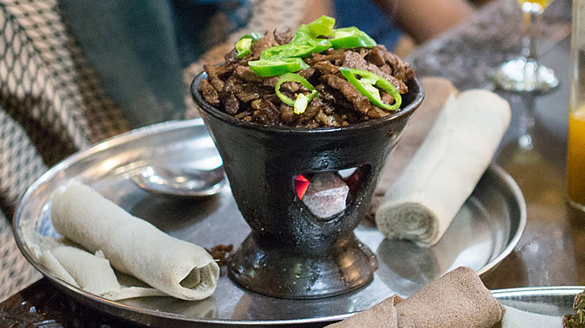

Special Tibs

Description
Tibs is a popular Ethiopian dish made with pieces of beef or lamb sautéed with onions, tomatoes, peppers, and aromatic Ethiopian spices. The meat is cooked until tender and flavorful, sometimes with a little butter to enhance its taste. Tibs is often served hot with injera and is enjoyed during family gatherings, celebrations, and special occasions.
Ingredients
- Beef or lamb, cut into pieces
- Onion
- Tomatoes
- Green peppers
- Garlic
- Niter kibbeh or cooking oil
- Berbere spice (optional)
- Rosemary (optional)
- Salt
- Black pepper
Steps
- Cut the beef or lamb into bite-sized pieces.
- Chop the onion, tomatoes, green peppers, and garlic.
- Heat niter kibbeh or cooking oil in a pan over medium-high heat.
- Add the meat and cook until browned.
- Add the onion and garlic, then stir for a few minutes.
- Add the tomatoes, green peppers, salt, black pepper, and optional berbere or rosemary.
- Continue cooking until the meat is tender and fully cooked.
- Serve hot with injera.